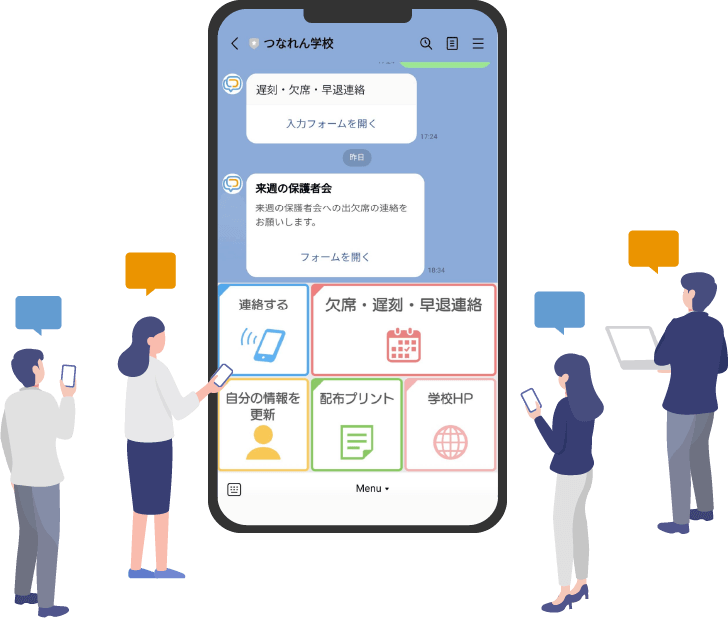
SNS 校務聯繫系統「聯絡通」
是一套可讓學校與家長透過 LINE 互相聯繫的系統。
在校務數位化持續推動的趨勢下，
可有效提升教育現場與家長聯繫的效率，並減輕作業負擔。
透過使用 LINE，不僅能降低導入成本，
亦提供隱私保護功能，
使家長個人的 LINE 帳號資訊（如使用者名稱與頭像）
不會直接顯示給教師，
讓您能更安心地使用。
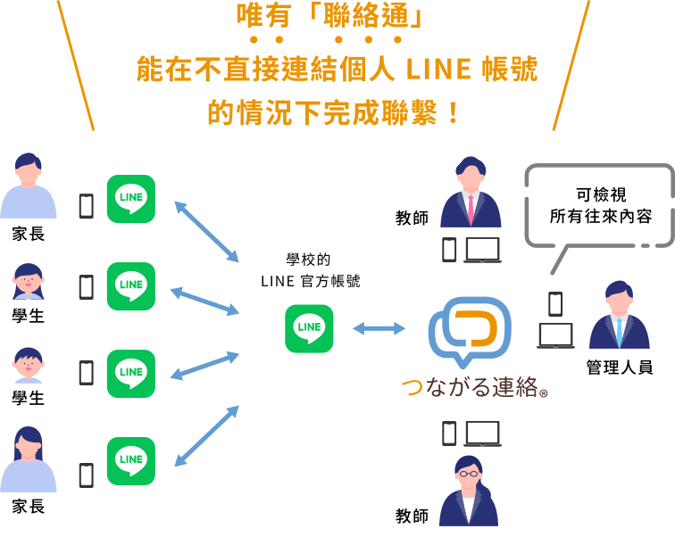
（※） 節錄自日本教職員組合
「2021年關於教育現場工作方式改革的意識調查」
您的教師是否也因聯繫作業而疲於奔命？
透過系統化提升效率，
節省時間、人力與成本！
教師的煩惱01
希望透過 LINE 與家長聯繫
提高聯絡作業效率
教師的煩惱02
希望管理者可確認並管理
教師與家長之間的聯繫內容
教師的煩惱03
望減少紙本資料發放
推動校務無紙化
教師的煩惱04
希望將學生遲到、缺席、早退
聯繫數位化
教師的煩惱05
希望盡量減少
下班時間的聯絡應對
教師的煩惱06
想提升學校聯絡作業效率
但不知道該使用哪一套系統
Point of TSUNAGARU RENRAKU
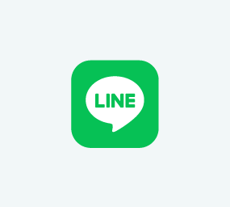
可與使用 LINE 的家長進行聯繫。學校端可透過 聯絡通，在系統內完成與家長的互動，因此教師與家長無須直接以個人 LINE 帳號互加好友，即可作為安心、安全的聯繫方式使用。
※ 亦可與使用 LINE 的學生進行聯繫。
除了遲到、缺席、早退聯繫功能外，也具備可向家長集中發送訊息與圖片的分眾發送功能，以及 1 on 1 個別聯繫功能等，完整支援學校聯繫作業所需功能。此外，也可依客戶需求提供系統使用教育訓練。
本服務以雲端服務方式提供，因此相較於從零建置系統，可大幅節省成本；學校端導入也更順暢。
Function of TSUNAGARU RENRAKU
功能 01
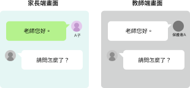
在聯絡通中，即使家長使用個人的 LINE 帳號與教師互動，教師端也不會顯示可識別家長 LINE 帳號的資訊，例如 LINE 頭像或使用者名稱，因此可避免教師與家長直接以個人 LINE 帳號互相連結。
功能 02
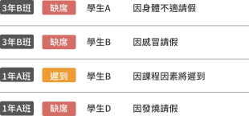
家長可透過 LINE 回報遲到、缺席或早退。系統可用清單方式查看已接收的遲到／缺席／早退資訊，並可依班級分類顯示。
功能 03
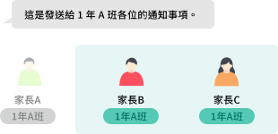
可依年級、班級、社團等屬性條件設定，進行群發訊息。例如可僅向特定班級的家長發送通知單圖片或 PDF 檔案，也可向特定社團所屬學生進行群發通知。
功能 04
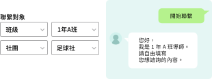
當家長希望個別聯繫班導師或社團指導老師時，可透過 1 on 1 訊息功能進行文字對話。管理者可查看所有往來內容。
功能 05
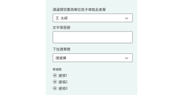
可於管理畫面建立問卷表單，並發送給家長或學生。像是家長會出缺席確認、家長面談時程安排等原本以紙本進行的校務，也能進一步 ICT 化。
功能 06
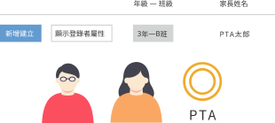
我們提供選配功能，讓家長會成員也能與教師一樣，使用分眾訊息發送及問卷調查功能。可向所屬家長統一發送訊息，作為日常聯繫與公告通知的管道。
（本功能為選配項目，詳情請洽詢。）
功能 07
當有必須閱讀的群發訊息時，可即時確認每位發送對象家長是否已讀該訊息。於災害等緊急情況時，也可作為平安確認用途使用。
（本功能為選配項目，詳情請洽詢。）
功能 08
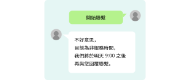
可針對主動聯繫的家長，依上班時間／非上班時間等不同情況，設定多樣化的自動回覆訊息。
功能 09
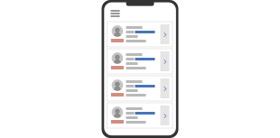
教師不僅可從電腦端，也可透過智慧型手機使用系統。無須一定在電腦上操作，因此例如在社團指導過程中，也能即時確認學生社團活動的遲到與缺席情況。此外，也可協助提供校務用手機導入相關諮詢。
功能 10
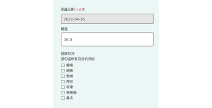
可透過 LINE 回報每日體溫與身體狀況等健康觀察資訊。相較於紙本健康觀察表的管理方式，可使作業流程更精簡，有助於減輕教師工作負擔。
（本功能為選配項目，詳情請洽詢。）
Voice
以下為使用聯絡通之學校的實際回饋。
公立國中
校長
本校自 2019 年 9 月起導入 SNS 學校聯繫系統「聯絡通」。導入初期，部分家長曾表示「學校要使用 LINE 嗎？」「不想和老師用 LINE 聯絡」，因此當時全校約 500 名學生中，使用率約為 70%。
然而，能透過手機輕鬆回報遲到、缺席、早退的功能，確實符合家長需求，也陸續收到如「早上忙碌時不用再打電話，真的幫了很大的忙」之類的正面回饋，對於學校決定導入本系統亦多所肯定。
此外，若將學校發給家庭的通知單數位化，即可透過 LINE 對話畫面統一發送。教師表示「省去列印作業，輕鬆很多」；家長也表示「不必再擔心孩子把通知單弄丟，能更確實收到資料」。目前已有超過 90% 的家庭使用，成為校務中不可或缺的工具。
我們透過「聯絡通」與家長進行 LINE 訊息往來。像是傳送班級合照或社團活動照片時，家長反應都很好。
各教師皆會透過 LINE 與家長互動，而校長、教務主任等管理職也被授予可查看全部聯繫內容的權限，這項機制非常好。若教師遇到難以回覆的訊息，校長也能提供建議或協助討論，有時我自己也會親自回覆。
以往若教師各自私下進行 LINE 聯繫，學校很難適時提供建議；但透過「聯絡通」共享整體狀況後，應對起來就容易許多。
公立國中
校長
透過 LINE 向家長發送通知單的功能，不僅方便，也確實實現了無紙化所帶來的成本與時間大幅節省。
今年約有 700 名學生在校，我自行估算後發現，光是紙張與墨水的支出每月約可減少 5 萬日圓，工作時間每月也大約節省 7 至 8 小時。這不僅是無紙化的進展，也是在學校教育持續推動資訊化的背景下，讓原本民間企業理所當然進行的文件數位化，在學校端也往前邁進了一步。
我們與教育委員會有一致的共識，認為無論採取何種方式，能與學生保持聯繫都是最重要的，因此也積極透過「聯絡通」向各家庭發送訊息。此外，「聯絡通」具備分眾發送功能，可依班級或社團進行群發通知，這點也非常實用。
學校發給家庭的文件種類繁多，例如校務通知、年級通知、班級通訊、保健通知、營養午餐通知等等，幾乎不勝枚舉。再加上在 COVID-19 防疫停課期間，課程影片 URL 的發送，以及對學生與家庭進行細緻聯繫，更是不可或缺。在這些應對上，「聯絡通」多元化的功能發揮了很大作用，也有助於提升大家對學校的歸屬感。家長也表示：「因為班導師會持續主動聯繫，即使在疫情緊急狀態期間，也能減輕不少不安。」